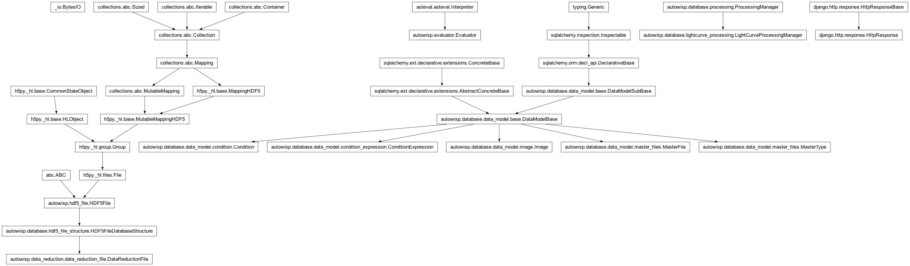

autowisp.browser_interface.diagnostics.detrending_diagnostics_views module
Class Inheritance Diagram

Views for displaying diagnostics for the calibration steps.
- autowisp.browser_interface.diagnostics.detrending_diagnostics_views._guess_labels(photref_entries)[source]
Guess what would make good labels for plotting.
- autowisp.browser_interface.diagnostics.detrending_diagnostics_views._init_detrending_session(request)[source]
Add to browser session which magfit runs can be diagnosed.
- autowisp.browser_interface.diagnostics.detrending_diagnostics_views._init_lc_detrending_session(request)[source]
Add to browser session which EPD and TFA runs can be diagnosed.
- autowisp.browser_interface.diagnostics.detrending_diagnostics_views.create_plot(session_detrending)[source]
Create the diagnostic plot per configuration in session.
- autowisp.browser_interface.diagnostics.detrending_diagnostics_views.display_detrending_diagnostics(request)[source]
View displaying the scatter after magnitude fitting.
- autowisp.browser_interface.diagnostics.detrending_diagnostics_views.download_detrending_diagnostics_plot(request)[source]
Send the user the diagnostics plot as a PDF file.